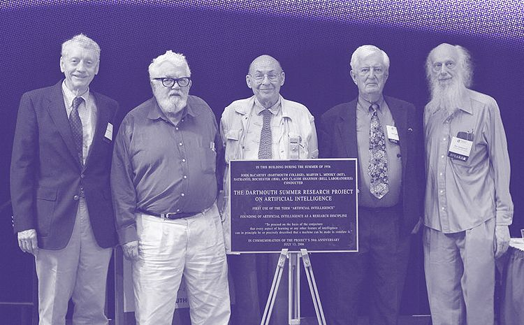

La historia de la inteligencia artificial empezo en 1943 con la publicacion del articulo "Un cálculo lógico de ideas inmanentes en la actividad nerviosa" por parte de Warren McCullough y Walter Pitts. En este articulo los cientificos dieron el primer modelo matematico para crear una red neuronal.
Alan Turing, es considerado como el padre de la inteligencia artificial ya que es en 1950 cuando turing publica su articulo "Computing machinery and intelligence", que se da la pregunta "¿las maquinas pueden pensar?" y propone un metodo para determinarlo que se llamaria Test de Turing, si la maquina lo superaba se le podia considerar como una maquina que podria hacer pasar por un humano si la charla fuese ciega, el test sigue estando vigente siendo motivo de estudios e investigaciones.
En el año 1956 John McCarty, Marvin misky y Claude Shannon dieron el termino IA en una conferencia como "la ciencia e ingenio de hacer maquinas inteligentes" la conferencia fue financiada por la fundacion Rockefeller

Desde esos años han surgido mas de 1.6 millones de publicaciones cientificas relacionadas a la IA